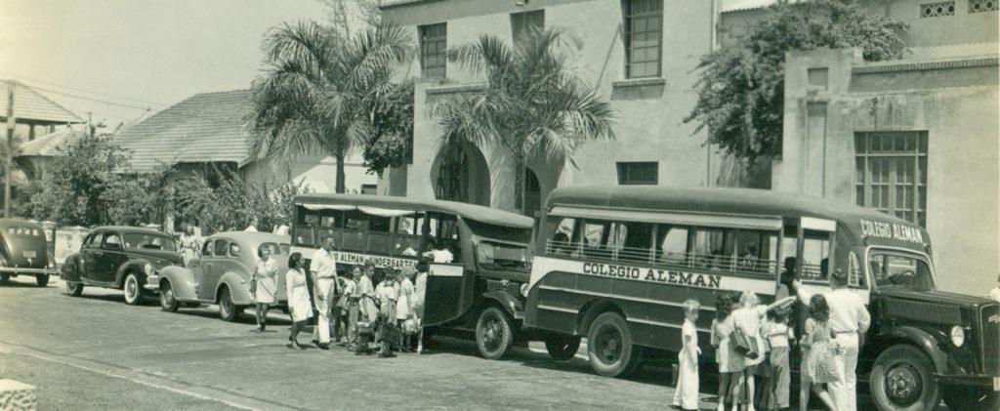

Nazis en Barranquilla: la huella del Tercer Reich en el Caribe
Historia / Segunda Guerra Mundial / Casos documentados

La historia
Durante las primeras décadas del siglo XX, Barranquilla se consolidó como uno de los principales centros comerciales y portuarios de Colombia. Su ubicación estratégica y su crecimiento económico atrajeron a numerosos inmigrantes extranjeros, entre ellos una importante comunidad alemana que participó activamente en el desarrollo empresarial, industrial y cultural de la ciudad.
Sin embargo, durante la década de 1930, el ascenso de Adolf Hitler al poder en Alemania también tuvo repercusiones al otro lado del océano. Las ideas del nacionalsocialismo comenzaron a circular entre algunos sectores de la comunidad alemana residente en Barranquilla, convirtiendo a la ciudad en uno de los escenarios de la influencia política alemana en América Latina.
Investigaciones históricas han documentado la presencia de organizaciones vinculadas al Partido Nacionalsocialista Alemán en Barranquilla. Entre ellas se encontraban grupos organizados, pequeñas secciones de las Juventudes Hitlerianas y estructuras relacionadas con organizaciones del régimen que operaban entre los alemanes residentes en el extranjero.
Estas actividades no se limitaron a reuniones privadas. También existieron manifestaciones culturales, celebraciones, encuentros sociales y publicaciones que difundían una imagen favorable del gobierno de Hitler. De esta manera, la ciudad se convirtió en un escenario donde las ideas políticas europeas encontraron espacios de circulación y organización.
La comunidad alemana en Barranquilla
La presencia alemana en Barranquilla era anterior al ascenso del nazismo. Desde finales del siglo XIX y comienzos del XX, empresarios, comerciantes, técnicos y familias procedentes de Alemania habían establecido negocios y relaciones comerciales en la ciudad.
Algunas empresas alemanas participaron en actividades relacionadas con el comercio, la navegación, la industria y el transporte. Su influencia fue especialmente importante en una ciudad que se encontraba experimentando un acelerado proceso de modernización.
Entre los espacios de encuentro de esta comunidad se encontraba el Club Alemán, donde se realizaban actividades sociales, culturales y recreativas. Durante los años treinta, algunas de estas actividades también estuvieron relacionadas con la difusión de ideas y expresiones de adhesión al nacionalsocialismo.
Es importante aclarar que no todos los ciudadanos alemanes residentes en Barranquilla eran integrantes del Partido Nazi ni compartían necesariamente sus ideas. La comunidad estaba formada por personas con diferentes posiciones políticas, intereses económicos y experiencias personales.
Propaganda nazi en el Caribe colombiano
Uno de los aspectos más interesantes de esta historia fue la utilización de medios impresos para difundir el pensamiento nacionalsocialista. Desde Barranquilla circularon publicaciones en alemán que contribuían a mantener informada a la comunidad sobre los acontecimientos de Alemania y promovían una imagen positiva del régimen.
Entre estas publicaciones se encontraba el Karibischer Beobachter, un medio impreso relacionado con la difusión de contenidos políticos y culturales entre los alemanes del Caribe colombiano.
Estas publicaciones permiten comprender cómo una ciudad portuaria del Caribe colombiano participó, a pequeña escala, en las dinámicas internacionales de propaganda que acompañaron el ascenso y expansión del nazismo.
La Segunda Guerra Mundial y la vigilancia en Colombia
El inicio de la Segunda Guerra Mundial en 1939 transformó profundamente la situación de los ciudadanos alemanes y sus empresas en Colombia. Las tensiones internacionales llevaron a las autoridades a prestar mayor atención a las actividades de las comunidades extranjeras.
Estados Unidos elaboró y difundió las denominadas listas negras, documentos que incluían nombres de personas y empresas sospechosas de mantener relaciones económicas o políticas con los países del Eje. Varias firmas vinculadas con ciudadanos alemanes en Colombia resultaron afectadas por estas restricciones.
En Barranquilla, las medidas tuvieron consecuencias económicas y sociales. Algunas empresas enfrentaron dificultades comerciales, mientras que las autoridades colombianas intensificaron la vigilancia sobre las actividades de organizaciones e instituciones relacionadas con ciudadanos alemanes.
La situación también afectó espacios educativos y sociales. Los colegios alemanes fueron objeto de intervención estatal y las actividades de diferentes organizaciones extranjeras quedaron bajo mayor supervisión.
¿Existieron redes de espionaje nazi en Barranquilla?
La posición geográfica de Barranquilla, su actividad portuaria y sus conexiones comerciales internacionales hicieron que la ciudad tuviera importancia estratégica durante la Segunda Guerra Mundial.
En aquella época circularon sospechas sobre posibles actividades de espionaje, propaganda y apoyo a los intereses alemanes en América. Los informes de inteligencia y la documentación gubernamental de la época reflejan la preocupación de las autoridades por estas actividades.
Sin embargo, es necesario diferenciar las actividades de propaganda y organización política de las operaciones de espionaje. La existencia de organizaciones nazis en Barranquilla está documentada, pero no debe afirmarse que todos sus integrantes fueran espías ni atribuir operaciones clandestinas concretas sin pruebas históricas.
Una historia poco conocida de Barranquilla
La presencia del nacionalsocialismo en Barranquilla representa uno de los episodios menos conocidos de la historia de la ciudad. Los documentos históricos, las publicaciones de la época y las investigaciones académicas permiten reconstruir cómo las tensiones políticas de Europa llegaron hasta el Caribe colombiano.
Más allá de los rumores y las teorías que circulan alrededor de los nazis en Colombia, este episodio constituye un capítulo real de la historia regional. Una historia de inmigración, comercio, propaganda, vigilancia y conflictos internacionales que dejó huellas en la memoria de Barranquilla.
En Archivos Misteriosos exploramos este capítulo histórico para descubrir cómo una ciudad del Caribe colombiano llegó a formar parte de las tensiones políticas e ideológicas que marcaron el mundo durante la Segunda Guerra Mundial.
Fuentes
Lázaro Montes, J. (2020). Los alemanes en el Caribe colombiano. Migración, sociabilidad y Nacionalsocialismo en Barranquilla, 1919-1945. Historia Contemporánea.
Consultar investigaciónLázaro Montes, J. (2017). Los medios impresos como recurso para la difusión del Nacionalsocialismo. Memorias.
Consultar investigaciónLázaro Montes, J. (2012). Presencia extranjera en Barranquilla: el caso de los alemanes, sus actividades económicas y el final de su influencia en la urbe caribeña, 1930-1941. Memorias.
Consultar investigaciónRadio Nacional de Colombia. (2022). Migración alemana en Barranquilla: ¿qué sucedió en el periodo entre guerras?
Consultar fuenteLázaro Montes, J. (2020). Alemanes en el Caribe colombiano: vida cultural y Nacionalsocialismo en Barranquilla, 1930-1942. HiSTOReLo.
Consultar investigación